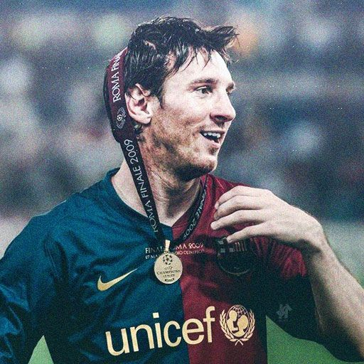

Cristiano Ronaldo är en legendarisk fotbollsspelare med ligatitlar i England, Spanien och Italien. Han är den första att nå 100 mål i UEFA Champions League. Utöver sin fotbollskarriär är han känd för filantropi och framgångsrika affärssatsningar. Med fem Ballon d'Or-titlar är han en av de mest hyllade spelarna genom tiderna.
Cristiano Ronaldo
Lionel Messi
Lionel Messi, världens bästa spelare, har erövrat ligatitlar i både Spanien och Frankrike. Han har slagit flera rekord, inklusive flest mål i La Liga och sex Ballon d'Or-titlar. Utöver sin imponerande fotbollskarriär är Messi också känd för sitt välgörenhetsarbete genom "Leo Messi Foundation".
Neymar Jr